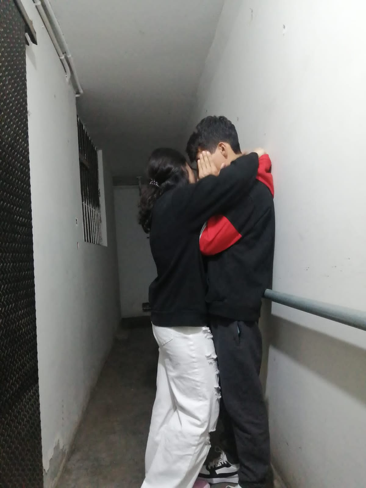

Hoy celebras el día más especial, porque es el día en que llegaste al mundo para iluminar la vida de los demas, eres la mejor persona que conozco, eso nunca lo dudes 🌹
Eras mi todo, y cada día contigo era un regalo, un regalo que al final yo malogre, Chaupis yo se que tendras dudad de el porque me aleje y porque volvia y asi , y es normal que piense que solo jugaba contigo , pero no , la realidad es que me gusta afrontar mis problmeas como sea , asi pierda todo , pero contigo era distinto siempre que soluciono un problema me odiaba , entonces yo soluciono todo alejandome y eso es lo que hice contigo, siempre decia terminabamos de una forma para no volver a pelear y rgresaba porque te amo y si, se amar pero no se como hacer para que tu te sientas amada, bueno ya no intente volver porque hace un tiempo vi un compartido tuyo que decia " Te conte como fueron conmigo y tu fuiste peor" me pregunte mucho ese dia el porque , y me odie una y otra vez, llore si , pero no me dolio a mi , si no al niño que hacia de todo para verte Feliz el que te regalo flores , el que abrazaba , el que te hacia reir , el que te escribio un libro , el que se moria por ti , el siempre te proteguio , al que no le importaba ir hasta tu casa a recojer y dejarte en cada salida , al que no le importaba el dinero si a ti te hacia Feliz al que llegaba tarde a casa por estar mas tiempo contigo, pero esta bien , te protegui de todos menos de mi mismo , me di cuenta tarde, y se lo dije a Caroline yo alejo a todos los que me quieren y si , lamento haberte hecho daño , nunca fue mi intencion , igual no se como se supone que fui peor que el , pero de igual manera tu solo sabes quien es mejor y peor para ti, desde ese dia ya no volvi a querer saber de ti, yo solo espero que cumplas todo lo que un dia me dijiste y yo se que sera asi , estoy orgulloso de ti, eres una gran persona,yo se que tu abuelito estaria orgulloso de la gran mujer que eres Chaupis , entonces yo te deseo lo mejor, y bueno tal vez mi actitudes han cambiado y yo tambien, la verdad es que tu eras esa persona que me ponia limites a seguir pensando en los demas , ahora si soy otro , la verdad se que nos choco diferente no digo que tu no sufriste obviamnete si , no se como la pasaste y tu tampoco como yo lo hice, yo se que tus padres te apoyaron espero, pero creo que venimos tal vez de mundo diferente , a mi casi no me importa mucha gente y no se ser sensible con todos , hasta volvia a matias como yo , pero a ti , yo nunca queria que fueras asi, siempre te mantuve lejos de ellos, igual ser sensible no esta mal, es un don y tu lo tienes, recuerda Chaupis, si haz de llorar, llora y abraza el peluche que te regale y hay estare, si haz de reir , rie con todas tus ganas que ilumas el dia , si haz de sentirte sola, mira al cielo y hay esta tu abuelito contigo, lamento no haber sido lo que esperabas no te preocupes, que ya no intentare nada, tu mimsa lo dijiste soy peor, y lo respeto, esta es la ultima vez que dejo mi orgullo y mi frialdad , porque tu lo vales me hiciste sacar una version mia que no sabia que tenia, y si odio a mucha gente pero a ti no podria odiarte aunque quiera, tal vez lleguen rumores de que te odio o que hablo mal, pero nunca lo haria porque le hable de ti a mis abuelos , a mi primito , el sigue diciendo Maugo y Pis porque no sabe decir Chaupis , tal vez fui lo peor de tu vida lo admito , pero Chaupis , yo enserio te ame , de la fomra mas sincera que pude amar a alguien y nunca voy a dejar que manchen tu nombre si yo estoy ahi, sabes jajjaja no me gusta recordar el pasado pero todo iba bien hasta que me fui a ese tonto viaje y falte a tu primer cumpleaños, desde ahi todo se sintio diferente cuando me vino a buscar el y todo eso ,antes se sentia todo hermoso unico y obvio que luego despues , pero antes tenia esa forma de amarte sin ningun miedo sin ningun temor, luego poco a poco me iba soltando pero ya tenia miedo de perderte y al final yo mismo te perdi, pero enserio creeme que cuando estabamos juntos yo nunca tuve ojos para otra persona , nunca me intereso otra persona, tal vez te mentia en un estoy bien o en un tranquila que no pasa nada , pero nunca en un TE AMO , TE EXTRAÑO, AMO TUS OJOS , QUIERO VERTE , ERES LA MEJOR , TE QUIERO , NECESITO TUS BESOS, con eso nunca te mentiria porque aunque yo tambien podria ponerme a pensar en algunas cosas que hiciste o dijiste y que me dolieron prefiero quedarme con tus abrazos , tu besos , tus caricias , todo lo bueno de ti , porque a mi no me importa lo que me digan de ti tu siempre vas a ser una persona buena , tal vez si errores , pero eso lo cometen todos, y ojala algun dia puedas perdonarme de verdad y no solo proque si, te mentiria si te digo que no siento nada por ti, te quiero y aun te amo un poco por si dudabas, pero eso ya no tiene importancia, esto lo escribo un jueves porque aun no se si podre ir el viernes , entonces si recibes esto es que tal vez no vaya, tal vez si voy pienses que odio a todos menos cuando me ria con mis amigos pero, es mi manera ahora de ser, y bueno tal vez te decepciones de mi porque volvi a mi antigua vida donde casi nadie me importa y volvia pelear, pero descuida , no tienes que preocuparte por mi toda mi vida he podido solo , y ahora cumples 18 Chaupis asi que SE ME PONE CONTENTA Y COMA TODA SU COMIDA, y no lo haga por mi hagalo por usted, y si soy peor que el porque yo fui detallista contigo , fui peor que el porque hable de ti con mi familia , fui peor porque te invitaba a comer y al cine y que no pagaras nada fui peor porque yo nunca te menti con mis sentimientos , fui peor porque nunca hice que me ruegues ni te cupes por todo , fui peor porque nunca quise que conozcas lo es que la verdadera calle y fui el peor porque Te ame con locura FELIZ CUMPLEAÑOS MI DUQUESITA 💕
